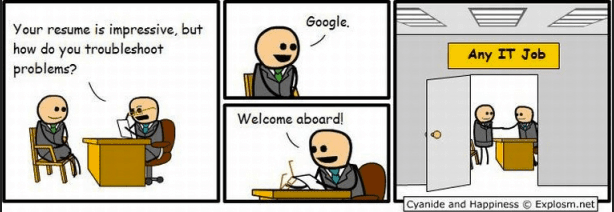
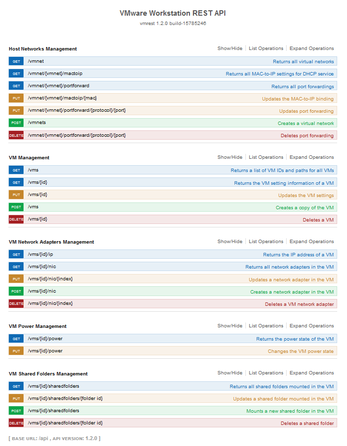
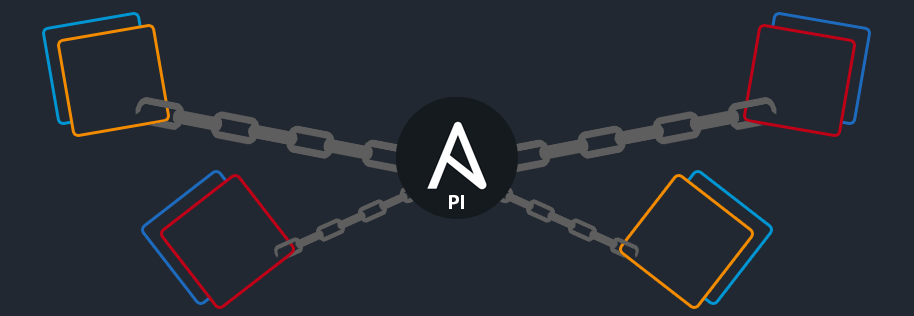

How I ended up developing a VMware Workstation/Fusion Pro Ansible module
As an IT professional and information security enthusiast, virtualization is one of the most important, if not the most, piece of software composing my workflow.
So much use cases I could talk about it for hours:
- Want to try bleeding edge software or OS updates without broking your actual setup ? Virtualize.
- Want to analyze malware ? Virtualize. (Bonus: get migraines from Cuckoo)
- Want to create a dedicated task-specific environnement ? Virtualize.
- Want to learn a new supervision system ? Virtualize.
- Need to replicate an issue ? Virtualize the whole setup. (Bonus: Replicate real life setup on VMs so you can pentest it with the force of a thousand suns.)
- etc.
And if you are concerned about your own data & system security you might come across alternatives operating systems like Qubes OS. Which at first maybe be destabilizing but in fine made you change your vision of some day to day tasks.
Where it all began
Long story short, I use virtualization, a lot. And as a fellow r/HomeLab member my homelab setup was as classic as you could imagine. Somes computers, switchs, firewalls, and a frankenstein server running ESXi which was hosting all my labs and crashtests environnements.
Life happens, workflow change, setup's mandatory specifications too. So, what ? I needed to convert my old virtual lab into a laptop-sized one.
With this 2 conditions:
- Mobility, not being dependant on external heavy hardware
I needed to be able to work outside of my house so it need to fit into a backpack.
- Nor internet connection
Internet connection would not be constant so forget about all sort of remoting access, no homelab VPS nor rented dedicated server.
Why? Well, I would not go into details. I'll let you imagine that I'm some kind of secret agent like a techie James Bond... or just another weird-nerd like Freakazoid.
So I switched to VMware Workstation Pro as hypervisor. Why? Well, this would need another blog post so I will save it for another day.
One of the mains concerns about running heavy virtualization lab on a laptop, coming from a classic lab, is the fact that your machines aren't turned on all the time nor the host !
Say goodbye to your loved cronjobs, schreduled tasks and so on. Because, even if instead of running them at regular intervals we set them up like on boot or logon, who knows ? Maybe I'm login on to retrieve a file or something and dont have time for your upgrades.
From now this will be launched manually but not without minimal optimisation, here come Ansible.
Ansible coming to the rescue
Converting my scripts into ansible playbooks allow me to upgrade multiple systems at once, whenever I want but without doing it manually on each one.
So what's the catch ? Well, like I said, all the VMs aren't up & running 24/7 so there is still manual work here: Boot the VMs one by one, wait for them all to be up and running, then launch my upgrading playbook.
I wanted to give Ansible the ability to start and stop my VMs, this would allow me create playbooks like:
- Boot All the windows VMs
- Update them
- Shut them off
This would be more efficient than the first solution.
So first I have been looking into WakeOnLan Magic Packet but no luck here, didn't manage to made it work, all my Google-Fu attempts resulted in 10 years old threads or topics about ESXi.
Little aside about ESXi
I thought about using ESXi in my new setup. In fact, using ESXi with or without vCenter would have helped me for various automations purposes, but it also would have this lot of downsides:
- Unability to organize VMs into folders
Workstation Pro can do it, ESXi can't. This could be fixed by using vCenter on top of ESXi. Don't get me wrong I love vCenter, it's an amazing addition on top of ESXi (I'm giving too much love to VMware today) but softwares have purposes and use cases.
This isn't one where a full ESXi & vCenter installation is the answer. And I didn't even mentionned about vCenter's RAM & CPU appetite.
- Increased boot time
Acknowledging the previous point, we would have this startup routine:
Laptop booting up, launching Workstation Pro, ESXi booting up, vCenter booting up, refresh Workstation Pro GUI with retrieved infos from shared VMs coming from vCenter, VM booting up.
This setup is not sustainable. Like i said earlier, imagine all this just to a rapid test or lookup into a VM !
Back on track
So, back to the main topic, where were we ? Yeah Ansible, Workstation Pro & my inability to make WOL working with the VMs.
So after more Google-Fu secret techniques I found about Workstation Pro's API.

My Github-Fu & Ansible-Galaxy-Fu may not be on point but so far no project are on that topic.
There I am, facing 2 possibilities (well 3):
- Forget it and do it manually
- Build hackish playbooks using some API-agnostic modules
- Build hackish real modules for the API
This is when I decided to become CEO of "Nobody seems to want nor need it so I will build it"
VMware Workstation/Fusion Pro's Ansible Modules
The REST API is designed as follow:

- 23 possibles requests
- Divided into 5 categories
While I only needed the power states related requests I decided to go all in and do the others too. This fulfill multiples purposes:
- Better understanding of Ansible
- More experience with powershell scripting
- Maybe I would need some of them in the future while getting more confortable with Ansible & my new lab.
- Because someone needs to do it

There is the link to my repository: Ansible-VMware-Workstation-Fusion-Pro-Modules.
The code is still hackish and is competing with Yandere Simulator's one but it works.I now can boot the VMs from my playbooks !
What's next
There is still work to do as I am still learning about how modules and systems interacts with Ansible so, in addition to code refactor and optimisation the whole "returned informations" topic is a big WIP.
Human-proofing
Also, I would like to make the API usage a little more... human proof ? Actually nothing refrain you from disconnecting or delete the network adapter of the VM where Ansible run from.
Variable definition too, nearly all VM requests use the VM ID, which we don't know easily nor retain. So if I could find some ways to simplify or automate this it would be great. But other problems are in our way here.
Renaming a VM is only effective on the GUI, folder name, files names etc, don't change. So I'm searching a way to do it. (Done)
VMware Fusion Pro (done since)
~~VMware Fusion Pro's REST API seems to be the same as Workstation Pro's one so porting it would only need to rewrite the powershell code into python, really trivial.
I started working on it but my actual environnement use a windows host so fixing Workstation Pro's one is my primary focus.
However you still can send me a MBP 16" 64GB to make me switch if you want.